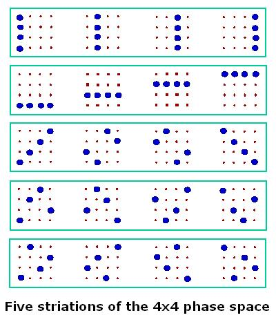

|
Finite Geometry Notes
|
Diamond Theory, the author's 1976 monograph on pure mathematics, deals with how symmetries in small binary finite geometries can be visualized as symmetries in ordinary Euclidean space.
As a synopsis of an authoritative 1991 book notes, finite geometries in general "find wide application in coding theory, algebraic geometry, design theory, graph theory, and group theory." The synopsis does not mention physics. Occasionally, however, speculation by physicists has invoked the pure mathematics of finite geometry (i.e., Galois geometry).
This web page supplies a few links to such speculation.
The most direct connection to diamond theory is via the following figure:

This figure appears in
Discrete
phase space based on finite fields,
Jan.-May 2004 (Citebase abstract), by
Kathleen S. Gibbons, Matthew J. Hoffman, and William K. Wootters
and in
Picturing qubits
in phase space, by William K. Wootters
(pdf, arXiv Aug. 9, 2003, 26 pp.).
For
more on the "striations" pictured above, see
Discrete
Wigner functions and quantum computational speed-up, by Ernesto F. Galvao (pdf, May 13, 2004, 7 pp.) (in
Citebase).
These striations are one of the sets of five mutually
orthogonal 4x4 arrays described in my note of December 1978 as equivalent
to "spreads" of mutually skew lines in the projective binary space
For details, see
Orthogonal Latin squares as skew
lines
(html), 1978-2001, by Steven H. Cullinane.
(Burkard
Polster has another way of
visualizing such a spread. For differences between my approach and Polster's,
see Geometry of the 4x4
square.)
For some other references to finite fields in physics, see
John Baez, sci.physics.research newsgroup letter of Sept. 2002, and
Some remarks on
arithmetic physics (pdf), by V. S. Varadaran, ca. 1999.
Update of Oct. 22, 2006:
A paper based on the above-mentioned work of Wootters et al.:
Qubits in phase space: Wigner function approach to quantum error correction and the mean king problem, by Juan Pablo Paz, Augusto Jose Roncaglia, and Marcos Saraceno (pdf, arXiv Nov 2004, 18 pp.)
Update of Nov. 3-4, 2006:
Some other papers related to finite geometry and quantum information theory:
Quantum Designs: MUBs, SICPOVMs, and (a little bit) More, by Markus Grassl (pdf, May 2006, 28 pp.)
Quantum designs - foundations of a non-commutative theory of designs
(In German: Quantendesigns - Grundzüge einer nichtkommutativen Designtheorie), by Gerhard Zauner (dissertation, 1999, ps.gz, 74 pp.)
MUBs, polytopes, and finite geometries, by Ingemar Bengtsson (pdf, arXiv July 2004, 15 pp.)
Mutually Unbiased Bases and Covers of Complete Bipartite Graphs, by Chris Godsil and Aidan Roy (pdf, 61 slides, Nov. 19, 2004)
Viewing sets of mutually unbiased bases as arcs in finite projective planes, by Metod Saniga and Michel Planat (pdf, 4 pp., March 29, 2005)
The limitations of nice mutually unbiased bases, by Michael Aschbacher, Andrew M. Childs, and Pawel Wocjan (pdf, arXiv Dec. 2004, 7 pp.)
Page created July 18, 2004.